Volver
Diseño Página Web
Para un curso, con un grupo de compañeros se nos dio la tarea de mejorar una página web de nuestra elección, de manera que la experiencia del usuario al usar la pagina mejorase.
Como grupo elegimos la página web “Rata de Mesa”, un sitio web que vende juegos de mesa. La elegimos ya que le pertenece a un amigo y propuse darle un nuevo look para que estuviese mas acorde a la identidad de la tienda
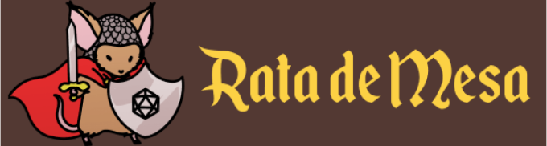
Como primer acercamiento, observamos cada elemento, botón, icono, etc. de la página y construimos la arquitectura de la información de la página.
Con la arquitectura hecha, decidimos darle una nueva identidad a la pagina, que estuviese más acorde a lo que inspiró al dueño a llamar la página Rata de Mesa. Decidimos que el sitio debía tener un look de una taberna medieval, para ello elegimos colores que estuviesen acorde a esta idea, como tonos cafés, crema y amarillos.
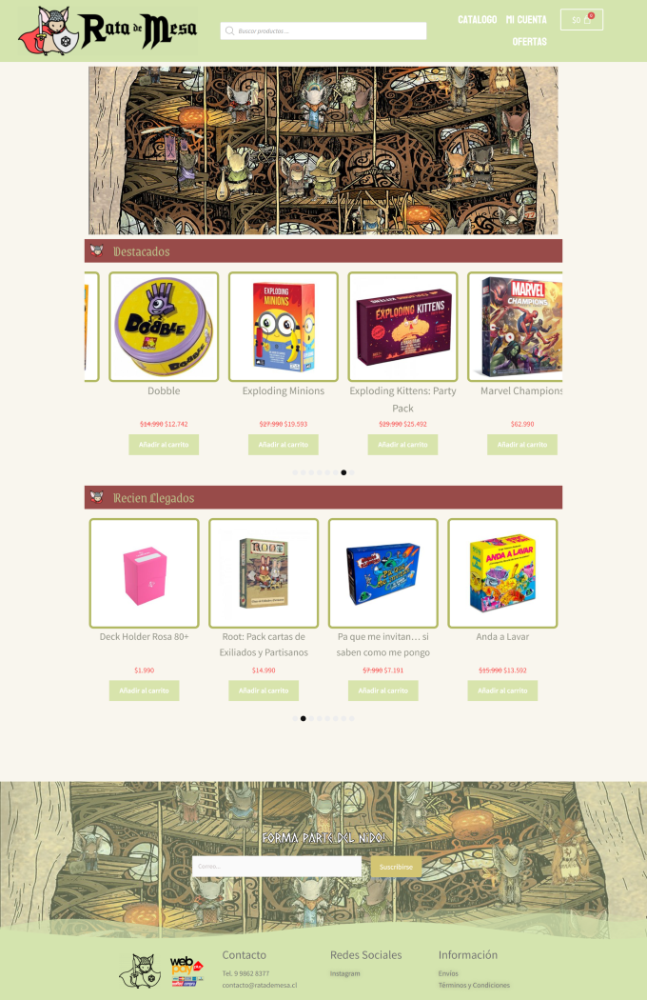
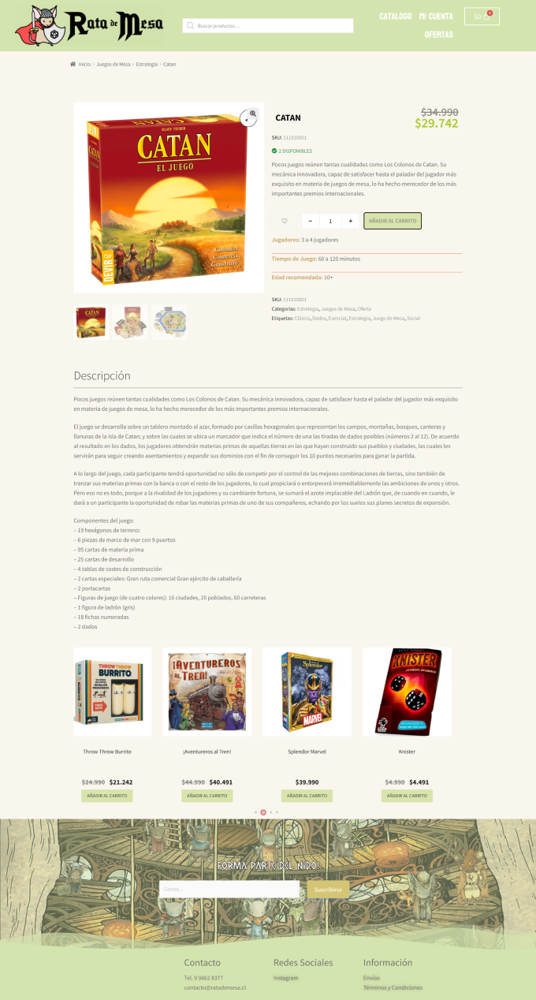
Luego de mucho trabajo, llegamos a un resultado extraordinario. De una página común y corriente, un poco aburrida, se transformó en una sitio con mas estilo y personalidad.
Como grupo logramos llegar a esa idea de taberna medieval que teníamos en mente, desde la tipografía hasta los colores. Además, añadimos y corregimos un par de cosas que faltaban en el sitio original.
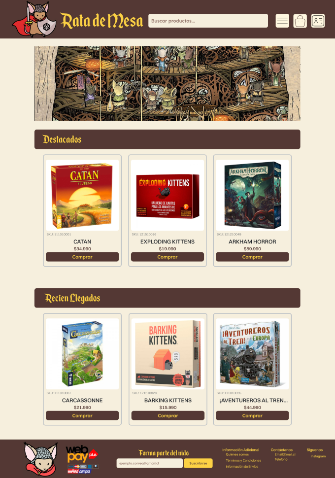
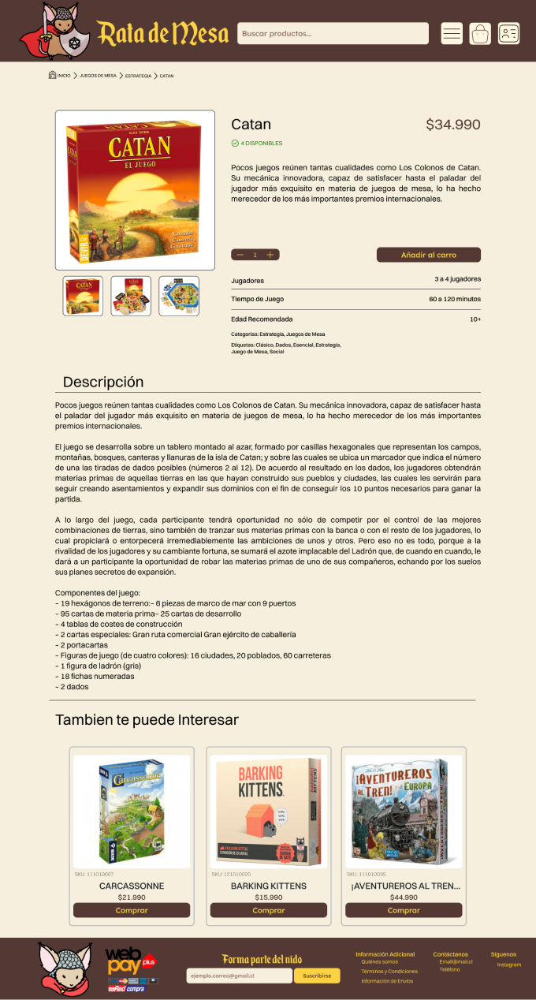
Volver
Diseño de Aplicación
Para un taller de UX-UI, se nos dio como encargo semestral solucionar un problema que cada estudiante formulase y lo resolviera mediante una aplicación. Además de crear una aplicación, se debió tomar en cuenta metodologías del UX-UI para realizar este gran trabajo. Se debió investigar, entrevistar y prototipar para alcanzar el resultado deseado de cada estudiante.
En mi caso, mi hipótesis fue que los controles remotos de las televisiones podían ser complicados de usar al tener muchos botones, además, los controles no están estandarizados, en el sentido de que para cada marca, la disposición y cantidad de botones varia.
También propuse que con menos botones el control remoto será más fácil de utilizar.
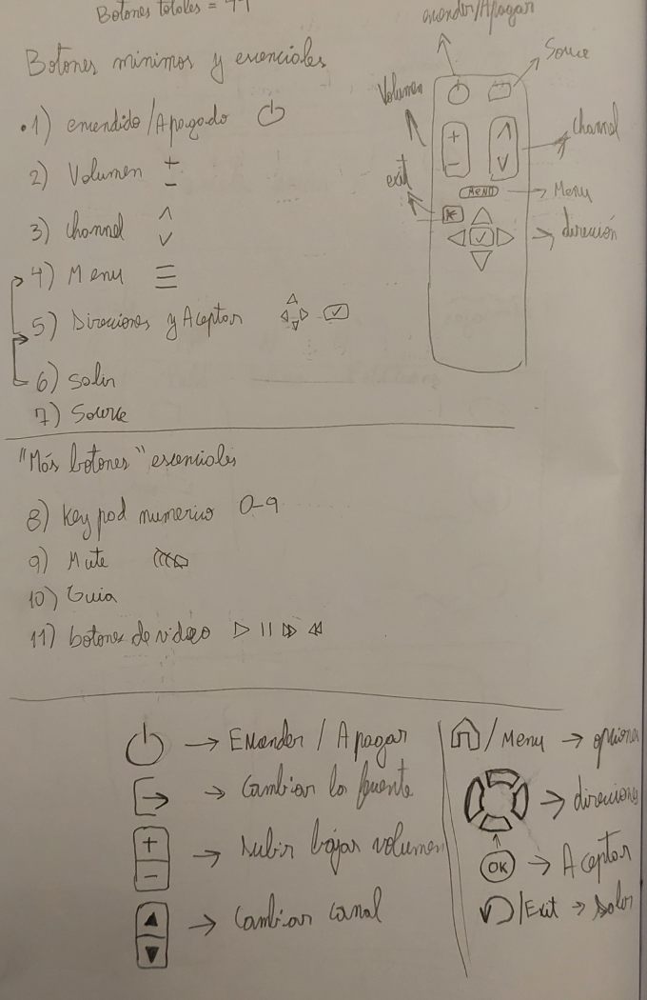
Para llegar a mi primer prototipo, levante información sobre mi problema y realice una encuesta para demostrar que mi problema era real. Además de la encuesta, observe diferentes controles remotos para ver la disposición de los botones y cuales se repetían.
Llegue a la conclusión de que 7 botones eran esenciales y el resto podía estar detrás de alguna opción en el control, lo que me dio un punto de partida.
Diseñe en Figma el primer prototipo con la información que recabé, logrando este resultado. Con el prototipo listo, hice una prueba acotada con 3 usuarios que compartían el problema propuesto. Para ello diseñe una prueba en Figma pidiéndoles que realizaran ciertas acciones con tiempo. Luego les pedí algún comentario sobre cada prueba y de la aplicación, lo cual me dio mucha información para la siguiente fase.
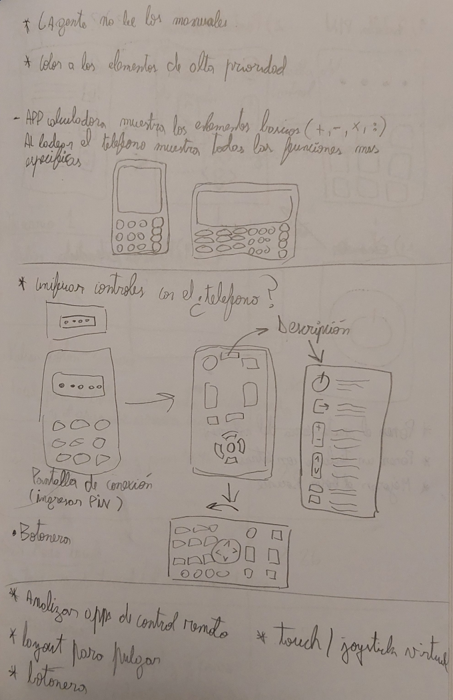
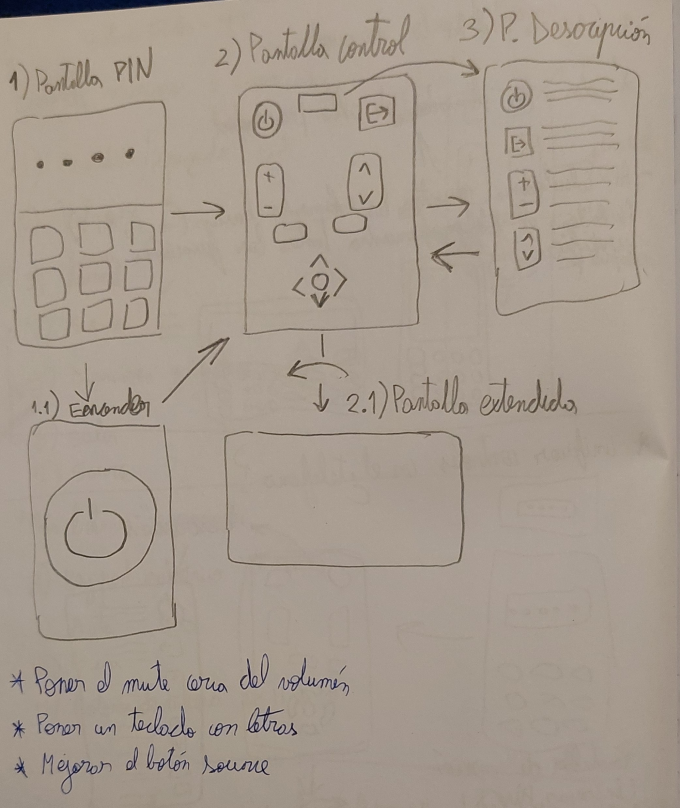
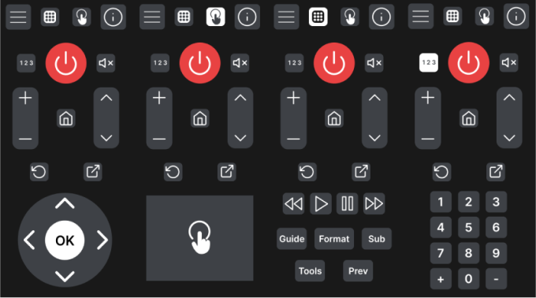
Finalmente, empecé a diseñar la aplicación final con los comentarios que me dieron y me di cuenta que para mi proyecto no debía reinventar la rueda, debía construir mi aplicación en torno al control que el usuario estaba acostumbrado a ver.
Con esto en mente, empecé a diseñar la aplicación final, afinando detalles y distribuyendo los botones como un control remoto convencional.
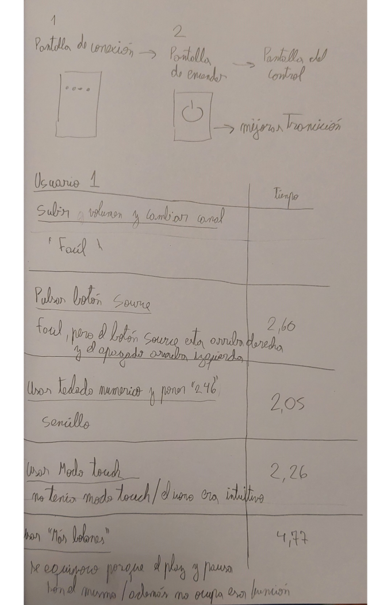
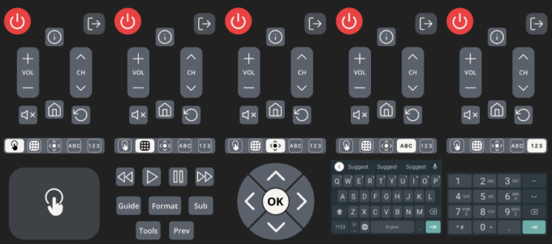